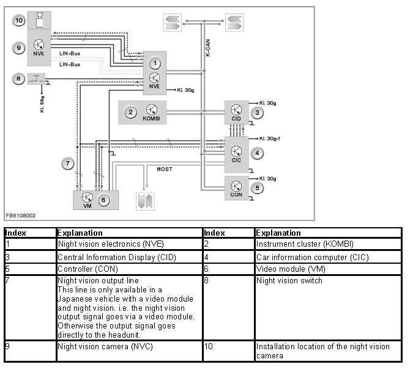

Video Diagnosis
Video Diagnosis
The video diagnosis is used to check all the outputs of swells and inputs of sinks.
Swells can be:
- Night vision
- All-round vision camera (from F01)
- Video module
- DVD changer
- Smartphone video integration
Sinks can be:
- Headunit
- Video switch (from F01)
- Rear seat entertainment system (from F01)
As the video switch is located between the swells and sinks, the inputs and outputs on the video switch are checked.
The video diagnosis is carried out automatically.
The following are possible with the video diagnosis:
- Creating test cards
- Displaying fitting variants
- Displaying faulty components
- Fault handling of faulty components
Possible installation of video components:
